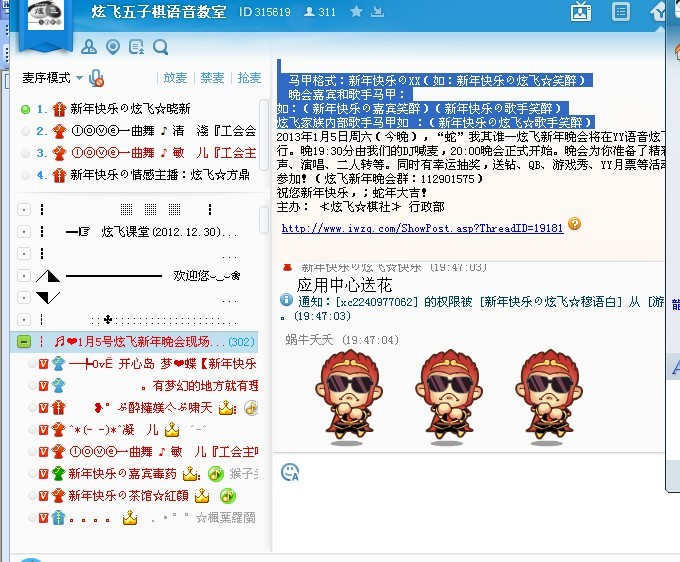
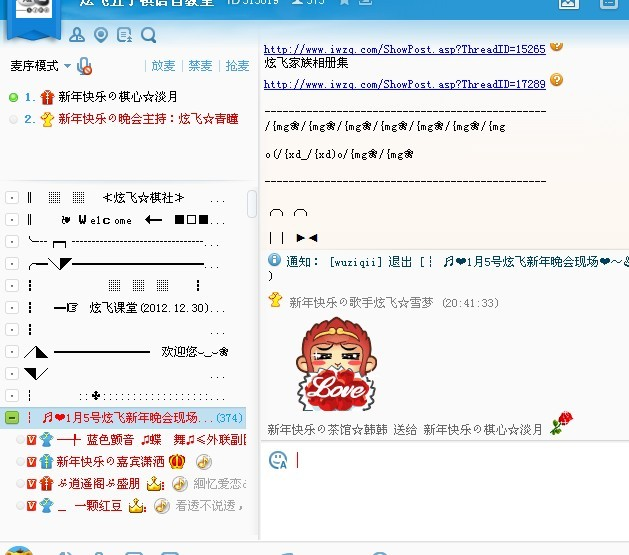

“蛇”我其谁 — 2013炫飞新年晚会圆满结束
#1 “蛇”我其谁 — 2013炫飞新年晚会圆满结束作者：千雪 发表时间：2013-1-11 21:01:48
“蛇”我其谁 — 2013炫飞新年晚会圆满结束
2013.1.5 19:30嘉宾炫飞晓新带来了激情的30分钟喊麦！随即，在一首悠扬动听的钢琴曲“雨的印记”中，“蛇”我其谁—炫飞新年晚会正式拉开了序幕！
在主持人青瞳的介绍下，炫飞管理层代表、实战棋手代表及各家族的代表们纷纷发表了热情洋溢的致辞。
众所期盼的文艺汇演持续了5小时左右，融汇在歌声与笑声里……
最后，在一片鲜花的海洋中，结束了本次晚会。
大地春回添锦绣，江山雪后更妖娆；处处管弦歌盛世，家家诗酒贺新年！
在这个喜庆而快乐的夜晚，请留下你的微笑，带走炫飞的祝福，留下你甜美的歌声，带走这美好的回忆，愿这欢声笑语，充满温情浪漫的时刻，永远驻留在我们彼此的心中！
感谢朋友们精彩的表演；特别感谢为晚会付出辛勤劳动的炫飞所有工作人员，谢谢你们 辛苦了！最后衷心感谢前来参加晚会的各位来宾朋友们。祝朋友们：新春快乐！家庭幸福！身体健康！万事如意！
炫飞新年晚会节目单：
19:30DJ炫飞☆晓新喊麦热身
序 曲钢琴演奏：雨的印记（表演嘉宾：炫飞☆闹闹）
20:00主持人开场白
◇炫飞管理层代表龙嘉罗致辞；
◇炫飞实战棋手代表清缘致辞；
◇陕西连珠西北狼棋社社长悟石致辞；
◇华夏家族代表笑天致辞并献唱；
◇五子茶馆雪飞老师致辞；
◇棋心愉悦族长淡月疏星致辞。
1．歌曲：女儿情（表演嘉宾：炫飞☆冰儿）
2．钢琴演奏：梁祝（表演嘉宾：炫飞☆馨雅）
3．歌曲：好听 （表演嘉宾：炫飞☆佐小伊）
4．歌曲：感恩的心（表演嘉宾：逍遥一梦）
5．歌曲：红豆红（表演嘉宾：茶馆☆今昔何夕）
◆游 戏 ……
6．歌曲：哥哥妹妹 （表演嘉宾：潇洒）
7．歌曲：逆战 （表演嘉宾：炫飞☆千雪）
8．相声：吹牛（表演嘉宾：炫飞☆凉风、茶馆☆穆语白）
9．歌曲：夜夜夜夜（表演嘉宾：茶馆☆紅顔）
10． 歌曲：隐形的翅膀（表演嘉宾：炫飞☆海豚）
◆游戏 ……
11． 歌曲：家在东北（表演嘉宾：茶馆☆草样年华）
12． 歌曲：你是我的罗密欧 （表演嘉宾：茶馆☆清淺）
13． 二 人 转：小拜年（表演嘉宾：炫飞☆盈儿）
◆游戏 ……
14． 歌曲：永远是朋友 （表演嘉宾：茶馆☆艺馨）
15． 歌曲：路灯下的小姑娘（表演嘉宾：茶馆☆c鱼刺）
◆游戏 ……
16． 歌曲：海芋恋（表演嘉宾：炫飞☆叉叉）
17． 歌曲：扇子舞 （表演嘉宾：茶馆☆紫幽剑）
18． 歌曲：黄玫瑰 （表演嘉宾：炫飞☆扣儿）
◆游戏 ……
19． 歌曲：断点 （表演嘉宾：炫飞☆7 7）
◆游戏 ……
20． 朗诵：彼岸的灯火（表演嘉宾：茶馆☆海边回忆）
21． 歌曲：枕上书、人鱼之恋（表演嘉宾：炫飞☆轻瑶）
22． 歌曲：如果没有你（表演嘉宾：炫飞☆无聊）
◆游戏 ……
23． 歌曲：好心分手 （表演嘉宾：炫飞☆tiny）
24． 歌曲：好汉歌 （表演嘉宾：炫飞☆菜菜）
25． 歌曲：空城 （表演嘉宾：炫飞☆良辰）
26． 歌曲：彩云之南 （表演嘉宾：别问我是谁）
◆游戏 ……
晚 会 结 束！
新年晚会中奖名单：
Q 钻：炫飞☆若雪、华夏☆笑天、茶馆☆草样年华
Q 币：茶馆☆紫幽剑2次、炫飞☆小4、炫飞☆小棋、茶馆☆箜の龙乀
月票：炫飞☆海豚2次、良辰、炫飞☆tiny、炫飞☆无聊、纡飛、炫飞☆千雪、炫飞☆冰弦、颩蕥
主持人：炫飞☆青瞳
主持稿编辑：炫飞☆笑醉
主 办 单位：≮炫飞☆棋社≯行政部
晚 会 频道：YY炫飞五子棋语音教室（ID：315619）
附：晚会部分截图
DJ喊麦：

开幕序曲演奏中……
各社团负责人致辞中……

点击进入…→ “蛇”我其谁 — 2013炫飞新年晚会录像
［此帖子已被 簡單 在 2013-1-11 21:15:35 编辑过］
［ 簡單 于 2013-1-11 21:17:41 时奖励此帖[金币加 100 威望加1］
［ 炫飞冰弦 于 2013-1-11 21:31:26 时花20金币送鲜花一朵］
［ 炫飞冰弦 于 2013-1-11 21:31:26 时花20金币送鲜花一朵］
［ 炫飞冰弦 于 2013-1-11 21:31:26 时花20金币送鲜花一朵］
［ 炫飞冰弦 于 2013-1-11 21:31:26 时花20金币送鲜花一朵］
［ 炫飞冰弦 于 2013-1-11 21:31:26 时花20金币送鲜花一朵］
［ 炫飞冰弦 于 2013-1-11 21:31:26 时花20金币送鲜花一朵］
［ 炫飞冰弦 于 2013-1-11 21:31:26 时花20金币送鲜花一朵］
［ 炫飞冰弦 于 2013-1-11 21:31:26 时花20金币送鲜花一朵］
［ 炫飞冰弦 于 2013-1-11 21:31:26 时花20金币送鲜花一朵］
［ 炫飞冰弦 于 2013-1-11 21:31:26 时花20金币送鲜花一朵］
［ 炫飞小小四 于 2013-1-11 22:05:21 时花20金币送鲜花一朵］
［ 炫飞小小四 于 2013-1-11 22:05:21 时花20金币送鲜花一朵］
［ 炫飞小小四 于 2013-1-11 22:05:21 时花20金币送鲜花一朵］
［ 炫飞小小四 于 2013-1-11 22:05:21 时花20金币送鲜花一朵］
［ 炫飞小小四 于 2013-1-11 22:05:21 时花20金币送鲜花一朵］
［ 炫飞花样 于 2013-1-11 22:12:29 时花20金币送鲜花一朵］
［ 炫飞花样 于 2013-1-11 22:12:29 时花20金币送鲜花一朵］
［ 炫飞花样 于 2013-1-11 22:12:29 时花20金币送鲜花一朵］
［ 炫飞花样 于 2013-1-11 22:12:29 时花20金币送鲜花一朵］
［ 炫飞花样 于 2013-1-11 22:12:29 时花20金币送鲜花一朵］
［ 炫飞花样 于 2013-1-11 22:12:29 时花20金币送鲜花一朵］
［ 炫飞花样 于 2013-1-11 22:12:29 时花20金币送鲜花一朵］
［ 炫飞花样 于 2013-1-11 22:12:29 时花20金币送鲜花一朵］
［ 炫飞花样 于 2013-1-11 22:12:29 时花20金币送鲜花一朵］
［ 炫飞花样 于 2013-1-11 22:12:29 时花20金币送鲜花一朵］
#2 Re:“蛇”我其谁 — 2013炫飞新年晚会圆满结束作者：炫飞冰弦 发表时间：2013-1-11 21:31:47
花花支持！！！［ 千雪 于 2013-1-11 22:16:12 时花20金币送鲜花一朵］
［ 千雪 于 2013-1-11 22:16:12 时花20金币送鲜花一朵］
#3 Re:“蛇”我其谁 — 2013炫飞新年晚会圆满结束作者：炫飞小小四 发表时间：2013-1-11 22:02:55
俺徒儿什么时候这么NB了
［ 千雪 于 2013-1-11 22:16:57 时花20金币送鲜花一朵］
［ 千雪 于 2013-1-11 22:16:57 时花20金币送鲜花一朵］
#4 Re:“蛇”我其谁 — 2013炫飞新年晚会圆满结束作者：炫飞花样 发表时间：2013-1-11 22:18:35
支持！！鲜花刷起来！！！！！
［ 千雪 于 2013-1-12 0:57:34 时花20金币送鲜花一朵］
［ 千雪 于 2013-1-12 0:57:34 时花20金币送鲜花一朵］
#5 Re:“蛇”我其谁 — 2013炫飞新年晚会圆满结束作者：郝妹妹 发表时间：2013-1-11 22:23:32
太棒了，喜欢闹闹的弹奏和凉风的吹牛
［ 千雪 于 2013-1-12 0:58:06 时花20金币送鲜花一朵］
［ 千雪 于 2013-1-12 0:58:06 时花20金币送鲜花一朵］
#6 Re:千雪【==“蛇”我其谁 — 2013炫飞新年晚会圆满结束==】作者：炫飞盈儿 发表时间：2013-1-11 22:57:57
晚会很棒，以后继续努力，办的更好［ 千雪 于 2013-1-12 0:58:29 时花20金币送鲜花一朵］
［ 千雪 于 2013-1-12 0:58:29 时花20金币送鲜花一朵］
#7 Re:“蛇”我其谁 — 2013炫飞新年晚会圆满结束作者：坏小姐 发表时间：2013-1-11 23:02:17
 板凳板凳 木有看到
板凳板凳 木有看到［ 千雪 于 2013-1-12 0:58:50 时花20金币送鲜花一朵］
［ 千雪 于 2013-1-12 0:58:50 时花20金币送鲜花一朵］
#8 Re:“蛇”我其谁 — 2013炫飞新年晚会圆满结束作者：饼干他哥 发表时间：2013-1-12 13:11:54
千雪 逆战 。。。。。。［ 千雪 于 2013-1-13 16:12:23 时花20金币送鲜花一朵］
［ 千雪 于 2013-1-13 16:12:23 时花20金币送鲜花一朵］
#9 Re:“蛇”我其谁 — 2013炫飞新年晚会圆满结束作者：冰雪笑醉 发表时间：2013-1-14 21:32:29
咱这个是重发的贴啊，我说怎么我的留言没了嘿嘿重新回复下！
这次晚会持续了5个多小时，对炫飞来说是前所未有的。
晚会能这么圆满的成功，还得感谢各友邦家族的支持！
还有炫飞家族的幕后工作人员以及家族所有成员的努力和支持！
特别感谢我们的美女主持青瞳
大家辛苦了！
祝大家在新的一年里幸福安康，蛇年大吉！
［ 千雪 于 2013-1-19 10:25:04 时花20金币送鲜花一朵］
［ 千雪 于 2013-1-19 10:25:04 时花20金币送鲜花一朵］